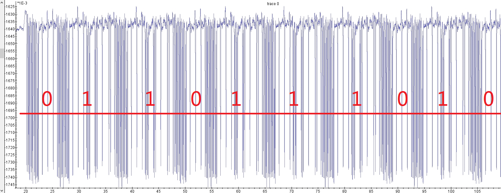

079 侧信道初探
题目：施主，我看你有学侧信道的慧根！来道简单的能量分析攻击（SPA）帮助你理解一下吧~ 程序在运行的时候，不同复杂度所用的时间和消耗的能量是不同的，下图是运行这个段 代码是运行椭圆曲线按位扫描二进制点乘算法时，采集的部分能量数据。请以二进制形 式读出来。
下载得到一段代码和一条折线图：

根据题意，每个循环中或者执行if内语句，或者不执行。不执行的情况下消耗能量较少，执行的情况下消耗能量较多，需要时间也更长。因此每两条密集带中间的稀疏带宽度如果较短，代表0，如果较长，代表1。也即：

flag：SCTF{0110111010}
080 Wireshark
下载得到pcapng文件，wireshark打开。先导出HTTP对象，注意到900、3721和5227三处分别有png图片的数据。
同时有多个网站的访问痕迹。排除图床（tietuku和up.imgapi.com）和迅雷，比较可疑的是tools.jb51.net。

先提取出三张png图片。其中5227处直接导出得到的png图片和3721处上传的png图片内容看似是一样的。
另一张带钥匙图案的图片在Linux下提示CRC错误，修改其高度为800得到：

这是一段密钥。结合之前找到的tools.jb51.net访问痕迹，找到对应272号数据包追踪http流，发现访问头：
GET /aideddesign/img_add_info HTTP/1.1
Host: tools.jb51.net
User-Agent: curl/7.54.0
Accept: */*
访问http://tools.jb51.net/aideddesign/img_add_info，在线图片添加/解密隐藏信息(隐写术)工具。显然我们已经获得了加密后的图片（3721处上传的png）和密钥（57pmYyWt），直接进行解密。

图片中隐藏的信息为：flag+AHs-44444354467B5145576F6B63704865556F32574F6642494E37706F6749577346303469526A747D+AH0-
十六进制ASCII转码得到flag。
flag：DDCTF{QEWokcpHeUo2WOfBIN7pogIWsF04iRjt}
081 qr-easy
下载得到jpg图片。

清晰版：

看这意思感觉是要把吃掉一半的二维码给还原解码出来。先用QrazyBox把剩下的一半二维码画出来：

然后看右上角定位块下面的蓝色横条：

参考二维码数据块格式：

提取得到已知的数据块内容：
D1 = 0b11101100 D14 = 0b10000010 D2 = 0b11111000 D15 = 0b10010101 D3 = 0b00110110 D16 = 0b00111101
D4 = 0b01110110 D17 = 0b01100010 D5 = 0b00100010 D18 = 0b11101001 D6 = 0b11110001 D19 = 0b10100001
D7 = 0b00110111 D20 = 0b11100101 D8 = 0b01010010 D21 = 0b11010101 D9 = 0b00010111 D22 = 0b00101101
D10 = 0b11011110 D23 = 0b10010111 D11 = 0b01000100 D24 = 0b10001011 D12 = 0b01010100 D25 = 0b01111000
D13 = 0b11001101 D26 = 0b11000110
mask后：
D1 = 0b00100000 D14 = 0b01001110 D2 = 0b00110100 D15 = 0b01011001 D3 = 0b11111010 D16 = 0b00001110
D4 = 0b01000101 D17 = 0b01010001 D5 = 0b00010001 D18 = 0b11011010 D6 = 0b00111101 D19 = 0b10010010
D7 = 0b00000100 D20 = 0b11010101 D8 = 0b10011110 D21 = 0b00011001 D9 = 0b11010100 D22 = 0b00010001
D10 = 0b00010100 D23 = 0b00001110 D11 = 0b11011101 D24 = 0b00010010 D12 = 0b11010010 D25 = 0b00011111
D13 = 0b01010100 D26 = 0b01000000
* 0001: Numeric Mode (10 bits per 3 digits)
* 0010: Alphanumeric Mode (11 bits per 2 characters)
* 0100: Byte Mode (8 bits per character)
* 1000: Kanji Mode (13 bits per character)
* 0111: ECI Mode
每个mode indicators后跟有Character count indicator：
* Version 1–9
* Numeric mode: 10 bits
* Alphanumeric mode: 9 bits
* Byte mode: 8 bits
* Kanji mode: 8 bits
* Version 10–26
* Numeric mode: 12 bits
* Alphanumeric mode: 11 bits
* Byte mode: 16 bits
* Kanji mode: 10 bits
* Version 27–40
* Numeric mode: 14 bits
* Alphanumeric mode: 13 bits
* Byte mode: 16 bits
* Kanji mode: 12 bits
每个模式的解码过程：
可以看出这个二维码仅包含Alphanumeric Mode和Byte Mode。
剩下的部分看不懂了，Writeup用了一段神奇的Ruby脚本解码得到了结果。
追加：后来在做其他题的时候发现了原理相同但更加方便的解法。仍旧使用QrazyBox，但要点是把能够确定的白色块也全部画出来：

然后点击上方的Tools，选择Extract QR Information：

可以看到工具自动执行了上述所有步骤，包括判断版本、纠错等级和Mask，提取计算数据块并还原信息。由于二维码的算法，数据块全部在右半边，纠错块全部在左半边，所以理论上只要有右半边，可以完全还原二维码的内容。

flag：SECCON{PSwIQ9d9GjKTdD8H}
082 halo
下载得到sc5.txt。
aWdxNDs0NDFSOzFpa1I1MWliT09w
先尝试base64：
igq4;441R;1ikR51ibOOp
查Writeup说是被异或了，这谁想得到啊！
又查了一下发现原题是Ringzer0ctf的Martian message part 3，原题给出的密文base64解码后是：
EOBD.7igq4;1ikb51ibOO0;:41R
前四位可以联想到flag格式“FLAG”，从而有提示和密钥。但这题里被删了。
python脚本异或爆破一下：
from base64 import *
a = b64decode('aWdxNDs1NDFSOzFpa1I1MWliT08w')
a = str(a)[2:-1]
for i in range(100):
res = ''
for j in range(len(a)):
res += chr(ord(a[j]) ^ i)
print(res)
结果挨个提交，最后靠运气找到flag。
flag：flag{jdr78672Q82jhQ62jaLL3}
083 MulTzor
下载得到txt文件，内容为大量十六进制数字：
38708d2a29ff535d9e3f20f85b40df3c3fab……
既无明显文件头，也无法转码，考虑整串内容都被某种方式加密过。尝试xortool。
先用十六进制编辑器将所有十六进制数字保存为文件（因为题目给出的附件少了一位，导致使用-x参数会产生奇数位报错，保存为文件会自动补全一个0，但也导致最后解密结果末位是错误的），然后先猜测明文是文本文件，出现最多的字符为空格（20）：
D:\CTFToolkit-v1.1.0\编码解码\xortool-for-Windows\xortool>python2 xortool.py -c 20 123
The most probable key lengths:
3: 11.9%
6: 19.7%
9: 9.4%
12: 14.5%
15: 7.1%
18: 11.2%
21: 5.3%
24: 8.4%
30: 6.8%
36: 5.7%
Key-length can be 3*n
1 possible key(s) of length 6:
w3\xffSY\x8b
Found 1 plaintexts with 95.0%+ valid characters
See files filename-key.csv, filename-char_used-perc_valid.csv
最有可能的密钥长度为6，给出了一个猜测的密钥，先用它尝试解密：
key = 'w3\xffSY\x8b'
flag = ''
c = open('C:/Users/Administrator/Desktop/123', 'rb').read()
for i in range(len(c)):
flag += chr(c[i] ^ ord(key[i % 6]))
print(flag)
输出结果：
OCrypt$nalys,s of 1he En,gma c,pheri+g sys1em en$bled 1he we6tern lliesein Wo7ld Wa7 II t* readesubst$ntialeamoun1s oforse-&oded 7adio &ommun,catio+s of 1he Ax,s pow rs th$t hadebeen nciph red u6ing E+igma (achin s. Th,s yie)ded m,litar< inte)ligen&e whi&h, al*ng wi1h tha1 fromeotheredecry5ted A=is ra!io an! tele5rinte7 tran6missi*ns, w$s giv n theecoden$me Ul1ra. T-is wa6 cons,deredeby we6tern uprem Alli d Com(andereDwigh1 D. E,senho2er toehave 'een "!ecisi3e" toethe A)lied 3ictor<.
……
大部分是有意义的，仍有少部分乱码，说明密钥部分位有错。开始修复。
第19位1he很明显应为the，所以密钥第1位应为0x46 ^ t = 2。
key = '23\xffSY\x8b'
flag = ''
c = open('C:/Users/Administrator/Desktop/123', 'rb').read()
for i in range(len(c)):
flag += chr(c[i] ^ ord(key[i % 6]))
print(flag)
输出结果：
Cryptanalysis of the Enigma ciphering system enabled the western Allies in World War II to read substantial amounts of Morse-coded radio communications of the Axis powers that had been enciphered using Enigma machines. This yielded military intelligence which, along with that from other decrypted Axis radio and teleprinter transmissions, was given the codename Ultra. This was considered by western Supreme Allied Commander Dwight D. Eisenhower to have been "decisive" to the Allied victory.
The Enigma machines were a family of portable cipher machines with rotor scramblers. Good operating procedures, properly enforced, would have made the plugboard Enigma machine unbreakable. However, most of the German military forces, secret services and civilian agencies that used Enigma employed poor operating procedures, and it was these poor procedures that allowed the Enigma machines to be reverse-engineered and the ciphers to be read.
The German plugboard-equipped Enigma became Nazi Germany's principal crypto-system. It was broken by the Polish General Staff's Cipher Bureau in December 1932, with the aid of French-supplied intelligence material obtained from a German spy. A month before the outbreak of World War II, at a conference held near Warsaw, the Polish Cipher Bureau shared its Enigma-breaking techniques and technology with the French and British. During the German invasion of Poland, core Polish Cipher Bureau personnel were evacuated, via Romania, to France where they established the PC Bruno signals intelligence station with French facilities support. Successful cooperation among the Poles, the French, and the British at Bletchley Park continued until June 1940, when France surrendered to the Germans.
From this beginning, the British Government Code and Cypher School (GC&CS) at Bletchley Park built up an extensive cryptanalytic capability. Initially, the decryption was mainly of Luftwaffe (German air force) and a few Heer (German army) messages, as the Kriegsmarine (German navy) employed much more secure procedures for using Enigma. Alan Turing, a Cambridge University mathematician and logician, provided much of the original thinking that led to the design of the cryptanalytical bombe machines that were instrumental in eventually breaking the naval Enigma. However, the Kriegsmarine introduced an Enigma version with a fourth rotor for its U-boats, resulting in a prolonged period when these messages could not be decrypted. With the capture of relevant cipher keys and the use of much faster US Navy bombes, regular, rapid reading of U-boat messages resumed.
The flag is: DDCTF{0dcea345ba46680b0b323d8a810643e9÷
flag：DDCTF{0dcea345ba46680b0b323d8a810643e9}
084 Keyes_secret
下载得到keyes.txt，内容：
RFVGYHNWSXCDEWSXCVWSXCVTGBNMJUY,WSXZAQWDVFRQWERTYTRFVBTGBNMJUYXSWEFTYHNNBVCXSWERFTGBNMJUTYUIOJMWSXCDEMNBVCDRTGHUQWERTYIUYHNBVWSXCDETRFVBTGBNMJUMNBVCDRTGHUWSXTYUIOJMEFVT,QWERTYTRFVBGRDXCVBNBVCXSWERFTYUIOJMTGBNMJUMNBVCDRTGHUWSXCDEQWERTYTYUIOJMRFVGYHNWSXCDEQWERTYTRFVGWSXCVGRDXCVBCVGREDQWERTY(TRFVBTYUIOJMTRFVG),QWERTYGRDXCVBQWERTYTYUIOJMEFVTNBVCXSWERFWSXCDEQWERTYTGBNMJUYTRFVGQWERTYTRFVBMNBVCDRTGHUEFVTNBVCXSWERFTYUIOJMTGBNMJUYIUYHNBVNBVCXSWERFTGBNMJUYMNBVCDRTGHUTYUIOJM,QWERTYWSXIUYHNBVQWERTYGRDXCVBQWERTYTRFVBTGBNMJUYXSWEFTYHNNBVCXSWERFTGBNMJUTYUIOJMWSXCDEMNBVCDRTGHUQWERTYIUYHNBVWSXCDETRFVBTGBNMJUMNBVCDRTGHUWSXTYUIOJMEFVTQWERTYTRFVBTGBNMJUYXSWEFTYHNNBVCXSWERFWSXCDETYUIOJMWSXTYUIOJMWSXTGBNMJUYZAQWDVFR.QWERTYTRFVBTYUIOJMTRFVGQWERTYTRFVBTGBNMJUYZAQWDVFRTYUIOJMWSXCDEIUYHNBVTYUIOJMIUYHNBVQWERTYGRDXCVBMNBVCDRTGHUWSXCDEQWERTYTGBNMJUIUYHNBVTGBNMJUGRDXCVBWSXCVWSXCVEFVTQWERTYWSXCFEWSXCDEIUYHNBVWSXCVGREDZAQWDVFRWSXCDEWSXCFEQWERTYTYUIOJMTGBNMJUYQWERTYIUYHNBVWSXCDEMNBVCDRTGHUEFVGYWSXCDEQWERTYGRDXCVBIUYHNBVQWERTYGRDXCVBZAQWDVFRQWERTYWSXCDEWSXCFETGBNMJUTRFVBGRDXCVBTYUIOJMWSXTGBNMJUYZAQWDVFRGRDXCVBWSXCVQWERTYWSXCDERGNYGCWSXCDEMNBVCDRTGHUTRFVBWSXIUYHNBVWSXCDEQWERTYTYUIOJMTGBNMJUYQWERTYCVGREDWSXEFVGYWSXCDEQWERTYNBVCXSWERFGRDXCVBMNBVCDRTGHUTYUIOJMWSXTRFVBWSXNBVCXSWERFGRDXCVBZAQWDVFRTYUIOJMIUYHNBVQWERTYWSXCDERGNYGCNBVCXSWERFWSXCDEMNBVCDRTGHUWSXWSXCDEZAQWDVFRTRFVBWSXCDEQWERTYWSXZAQWDVFRQWERTYIUYHNBVWSXCDETRFVBTGBNMJUMNBVCDRTGHUWSXZAQWDVFRCVGREDQWERTYGRDXCVBQWERTYXSWEFTYHNGRDXCVBTRFVBRFVGYHNWSXZAQWDVFRWSXCDE,QWERTYGRDXCVBIUYHNBVQWERTYEFVGYWDCFTWSXCDEWSXCVWSXCVQWERTYGRDXCVBIUYHNBVQWERTYTRFVBTGBNMJUYZAQWDVFRWSXCFETGBNMJUTRFVBTYUIOJMWSXZAQWDVFRCVGREDQWERTYGRDXCVBZAQWDVFRWSXCFEQWERTYMNBVCDRTGHUWSXCDEGRDXCVBTRFVBTYUIOJMWSXZAQWDVFRCVGREDQWERTYTYUIOJMTGBNMJUYQWERTYTYUIOJMRFVGYHNWSXCDEQWERTYIUYHNBVTGBNMJUYMNBVCDRTGHUTYUIOJMQWERTYTGBNMJUYTRFVGQWERTYGRDXCVBTYUIOJMTYUIOJMGRDXCVBTRFVBQAZSCEIUYHNBVQWERTYTRFVGTGBNMJUYTGBNMJUZAQWDVFRWSXCFEQWERTYWSXZAQWDVFRQWERTYTYUIOJMRFVGYHNWSXCDEQWERTYMNBVCDRTGHUWSXCDEGRDXCVBWSXCVQWERTYEFVGYWDCFTTGBNMJUYMNBVCDRTGHUWSXCVWSXCFEQWERTY(WSX.WSXCDE.,QWERTYYHNMKJTGBNMJUCVGREDQWERTYYHNMKJTGBNMJUYTGBNMJUZAQWDVFRTYUIOJMEFVTQWERTYNBVCXSWERFMNBVCDRTGHUTGBNMJUYCVGREDMNBVCDRTGHUGRDXCVBXSWEFTYHNIUYHNBVQWERTYWSXZAQWDVFRQWERTYNBVCXSWERFMNBVCDRTGHUTGBNMJUYTRFVGWSXCDEIUYHNBVIUYHNBVWSXTGBNMJUYZAQWDVFRGRDXCVBWSXCVQWERTYIUYHNBVWSXCDETYUIOJMTYUIOJMWSXZAQWDVFRCVGREDIUYHNBV).QWERTYRFVGYHNWSXCDEMNBVCDRTGHUWSXCDEQWERTYGRDXCVBMNBVCDRTGHUWSXCDEQWERTYEFVTTGBNMJUYTGBNMJUMNBVCDRTGHUQWERTYTRFVGWSXCVGRDXCVBCVGRED{WSXIUYHNBVTRFVBTRFVBQWERTYQAZSCEWSXCDEEFVTYHNMKJTGBNMJUYGRDXCVBMNBVCDRTGHUWSXCFEQWERTYTRFVBWSXNBVCXSWERFRFVGYHNWSXCDEMNBVCDRTGHU}QWERTYMNBVCDRTGHUWSXCDEEFVGYWSXCDEMNBVCDRTGHUIUYHNBVWSXCDE-WSXCDEZAQWDVFRCVGREDWSXZAQWDVFRWSXCDEWSXCDEMNBVCDRTGHUWSXZAQWDVFRCVGRED,QWERTYZAQWDVFRWSXCDETYUIOJMEFVGYWDCFTTGBNMJUYMNBVCDRTGHUQAZSCEQWERTYIUYHNBVZAQWDVFRWSXTRFVGTRFVGWSXZAQWDVFRCVGRED,QWERTYNBVCXSWERFMNBVCDRTGHUTGBNMJUYTYUIOJMTGBNMJUYTRFVBTGBNMJUYWSXCVQWERTYGRDXCVBZAQWDVFRGRDXCVBWSXCVEFVTIUYHNBVWSXIUYHNBV,QWERTYIUYHNBVEFVTIUYHNBVTYUIOJMWSXCDEXSWEFTYHNQWERTYGRDXCVBWSXCFEXSWEFTYHNWSXZAQWDVFRWSXIUYHNBVTYUIOJMMNBVCDRTGHUGRDXCVBTYUIOJMWSXTGBNMJUYZAQWDVFR,QWERTYNBVCXSWERFMNBVCDRTGHUTGBNMJUYCVGREDMNBVCDRTGHUGRDXCVBXSWEFTYHNXSWEFTYHNWSXZAQWDVFRCVGRED,QWERTYGRDXCVBZAQWDVFRWSXCFEQWERTYTRFVBMNBVCDRTGHUEFVTNBVCXSWERFTYUIOJMGRDXCVBZAQWDVFRGRDXCVBWSXCVEFVTIUYHNBVWSXIUYHNBVQWERTYGRDXCVBMNBVCDRTGHUWSXCDEQWERTYGRDXCVBWSXCVWSXCVQWERTYIUYHNBVQAZSCEWSXWSXCVWSXCVIUYHNBVQWERTYEFVGYWDCFTRFVGYHNWSXTRFVBRFVGYHNQWERTYRFVGYHNGRDXCVBEFVGYWSXCDEQWERTYYHNMKJWSXCDEWSXCDEZAQWDVFRQWERTYMNBVCDRTGHUWSXCDEQAZXCDEWVTGBNMJUWSXMNBVCDRTGHUWSXCDEWSXCFEQWERTYYHNMKJEFVTQWERTYNBVCXSWERFMNBVCDRTGHUWSXTGBNMJUYMNBVCDRTGHUQWERTYTRFVBTYUIOJMTRFVGQWERTYTRFVBTGBNMJUYZAQWDVFRTYUIOJMWSXCDEIUYHNBVTYUIOJMIUYHNBVQWERTYGRDXCVBTYUIOJMQWERTYWSXCFEWSXCDETRFVGQWERTYTRFVBTGBNMJUYZAQWDVFR.
观察前几位：RFVGYHN、WSXCDE、WSXCV、TGBNMJUY，在键盘上都是连续的相邻按键，说明本题是键盘密码。根据键盘上按键排列形状可以得到列出的这四段分别代表H、E、L、O。以此类推，得到替换表：
STR = STR.replace("WSXCDE",'e')
STR = STR.replace("RFVGYHN",'h')
STR = STR.replace("WSXCV",'l')
STR = STR.replace("TGBNMJUY",'o')
STR = STR.replace("TGBNMJU",'u')
STR = STR.replace("GRDXCVB",'a')
STR = STR.replace("CVGRED",'g')
STR = STR.replace("QWERTYTRFVG",'f')
STR = STR.replace("WSXCFE",'d')
STR = STR.replace("IUYHNBV",'s')
STR = STR.replace("QWERTY",' ')
STR = STR.replace("TRFVB",'c')
STR = STR.replace("QAZSCE",'k')
STR = STR.replace("NBVCXSWERF",'p')
STR = STR.replace("MNBVCDRTGHU",'r')
STR = STR.replace("WSX",'i')
STR = STR.replace("EFVT",'y')
STR = STR.replace("YHNMKJ",'b')
STR = STR.replace("ZAQWDVFR",'n')
STR = STR.replace('XSWEFTYHNXSWEFTYHN','m')
STR = STR.replace('EFVGYWDCFT','w')
STR = STR.replace('TYUIOJM','t')
STR = STR.replace('QAZXCDEWV','t')
STR = STR.replace('XSWEFTYHN','m')
STR = STR.replace('EFVGY','v')
STR = STR.replace('RGNYGC','x')
STR = STR.replace('TRFVG', 'f')
明文：
hello,in computer security, capture the flag (ctf), a type of cryptosport, is a computer security competition. ctf contests are usually designed to serve as an educational exercise to give participants experience in securing a machine, as well as conducting and reacting to the sort of attacks found in the real world (i.e., bug bounty programs in professional settings). here are your flag{iscc keyboard cipher} reverse-engineering, network sniffing, protocol analysis, system administration, programming, and cryptanalysis are all skills which have been retuired by prior ctf contests at def con.
flag：FLAG{ISCC-KEYBOARD-CIPHER}